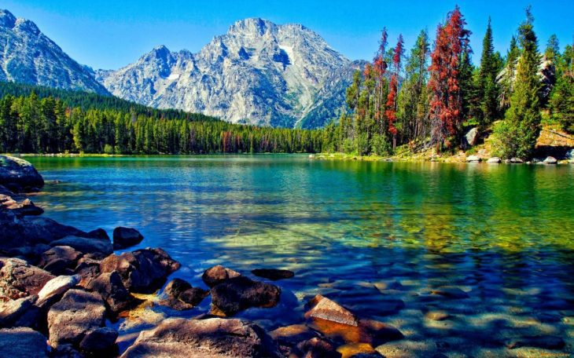
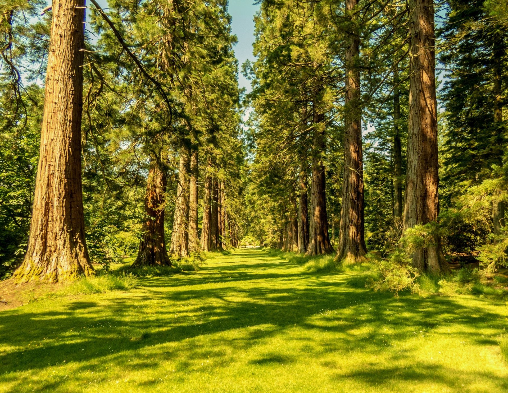
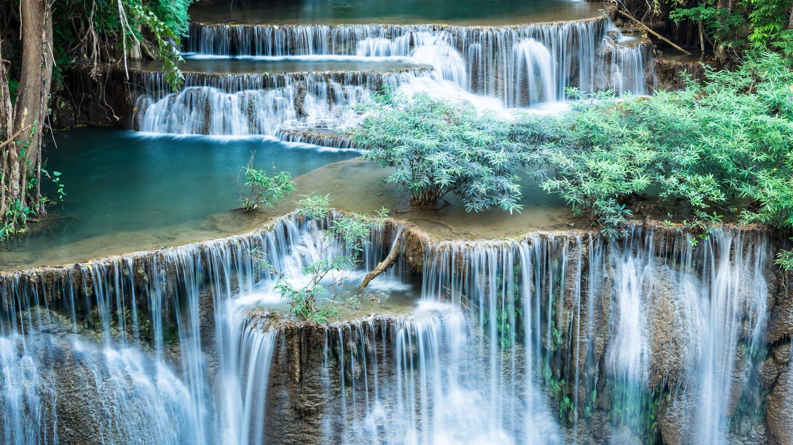

Flower fields in spring and summer for a short time create stunning landscapes. It does not matter the type of flowers, it can be tulips, sunflowers, lavender, and many others, all of them captivate with their beautiful outfit. The fields are so bright, as if someone spilled paint on the ground, these flower fields seem like a palette of colors.
2023 Illustrations lakes. Many lakes are decorated with unique landscapes. It is not easy to determine the best lake on the planet or to rank them. Each charms the eye with its uniqueness.
2023 Illustrations forests. Forests cover 26% of the planet, it impresses with their beauty and power. Thanks to forests, our planet Earth has a habitable atmosphere that contains enough oxygen for breathing.
2023 Illustrations waterfalls. Waterfalls are a powerful manifestation of the water element, which pours tons of water from a high rock with the roar of an airplane. This word usually evokes such associations. However, water can be not only formidable and powerful but also gentle and calm.